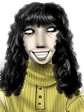

全体テーマ
記憶と忘却、罪と隠蔽、そして「美しくする」という歪んだ論理。
『The Walten Files』で描かれる1974年前後の連続失踪事件とソフィー・ウォルテンの記憶を軸に、各映像の内容・確定事実・仮説を整理した考察ノートである。
この先は『The Walten Files』全編（ファイル1〜4と隠し動画）の内容に触れている。

記憶と忘却、罪と隠蔽、そして「美しくする」という歪んだ論理。
1974年5月2日の飲酒運転事故（エドとモリーの死亡と遺体隠蔽）を起点に、Bon's Burgers関係者の失踪と殺害が連鎖する。殺害された犠牲者の肉体と魂はアニマトロニクス（バニー・シャ・ビリー）や人形（Rocket）に閉じ込められ、社内テープや業務用ゲームを通じて外部へ干渉する。薬で過去の記憶を失っていた生存者ソフィー・ウォルテンが、残された映像とゲーム筐体『BunnyFarm』を通じて1974年の事件を思い出していく。


